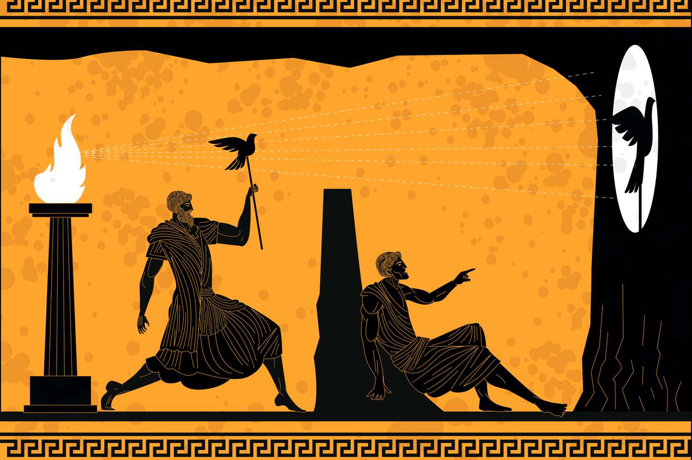

What does it mean to capture an image? When I was reading In Plato's Cave the author described image capturing as an experience. I definitely agree that images are used to capture a moment. Before I even start to take a photo, I start to imagine what type of mood I want to convey. Looking around the environment and seeing the different light sources present. If I wanted the mood to be calm I would find soft light that would not take the attention away from what I want to focus on. With tone I also consider the color concentration of my photos. Experimenting with the different scales and charts on the software. Seeing how each color could complement each other thus bring out a new vibe I try to take photos and review them on the spot. My personal favorite is blues and yellow. The two colors have different interpretations but look so attractive when put together. Image capturing is a learning process as I strive for pieces that I would later be satisfied with. In the past two classes I found myself constantly reflecting and trying to improve my photos. I found my images to have come too dark and blurry. Therefore review the lesson and write down important settings to adjust next time. Needing to focus on the distance between the camera and the object that is being photographed was what I needed to improve in my next photo. Stepping more back behind when taking an image would solve my problem of a blurry image. When I was concentrating on the subject I did not realize that I was too close. Now I would try to distance myself from the object to focus on. During my editing time on photoshop I realized that the zoom was too intense. There is a need to explore the difference that zoom with the camera makes and cropping the picture. This is because I found out many of the shots that I took would have looked nicer if I had not zoomed in with the camera. Thus instead should have been left room for me to crop while editing. I often do not explore taking photos of people, instead I like capturing different environments. During my previous trip I would take a part of my time to explore the different landscape there. In my favorite rural settings it is easy for me to move around. I would like to explore creating different types of weather in the future. How would rain add or remove from an image setting and create a new focus point. When I previously took images in rainy weather the photos would come out different from what I had expected. Since the lighting had a major impact on the shot that day. I did not fully consider the background thus it became a mixture of moody green. Nothing in the image stood out thus looking very flat. I would look further into angles and how that plays a importance in an image. I often just took images at hand height and did not adjust to lower or higher angles.